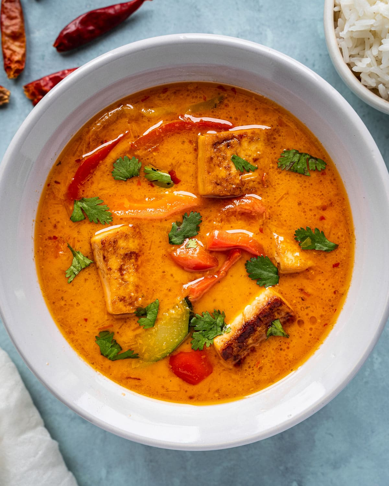

Thai Curry

This red tofu thai curry dish is healthy and delicious!
Thai curry is a great comfort food that can be serve with
rice or noodles. They're tasty eaten as leftovers.
Ingredients
- 1 pack of firm tofu
- 1 cup of sliced onion
- 2 cups of sliced shitake mushrooms
- 2 cups of coconut milk
- 2 tablespoon of red curry paste
- 2 teaspoon of cornstarch
Steps
- In a large pan, stir fry the onions and mushrooms with cooking oil on medium heat
- Add in the red curry paste and stir fry along with the vegetables
- Add in the coconut milk and 1/2 - 1 cup of water to the mixture
- In a small bowl, add the cornstarch and 3 teaspoon of water and mix until the constarch is dissolved. Then add the the mixture
- Cut the tofu into medium or bite size cubes, and add to the pan. Stirring the ingredient occasionally
- Do a taste test and check if the curry needs some salt & pepper. Otional; a bit of white wine or beer (about 1/2 cup) can be added
- Curry is ready to be serve with steam rice or noodles